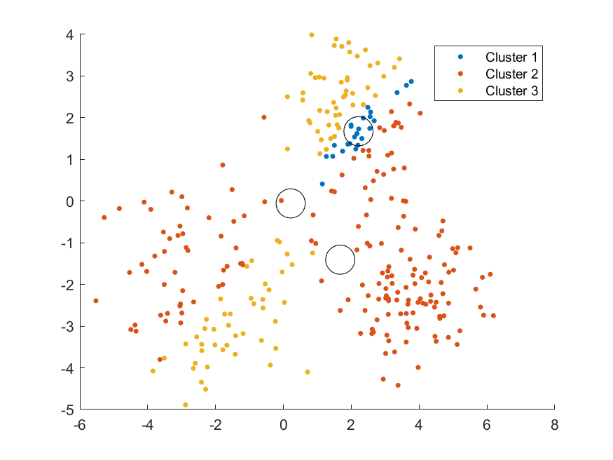
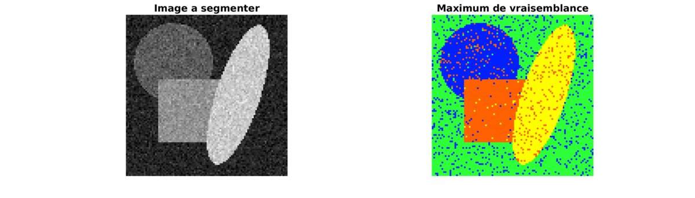
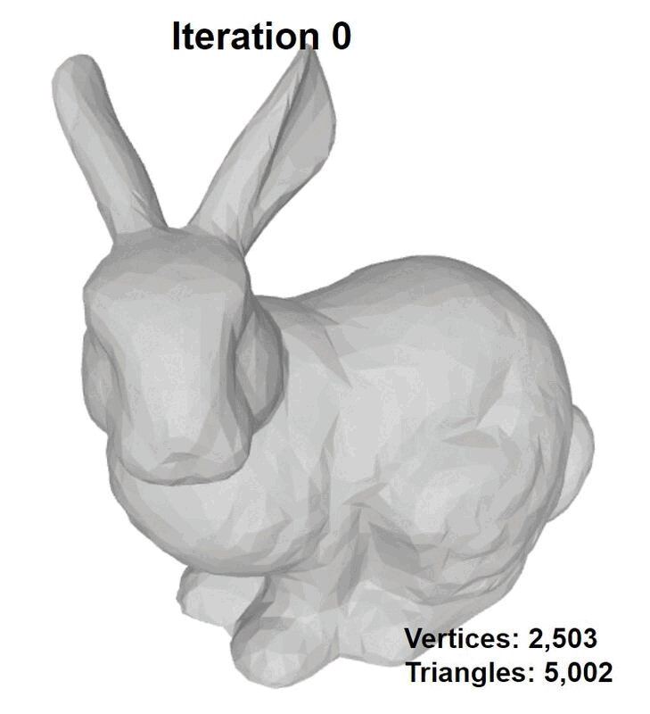
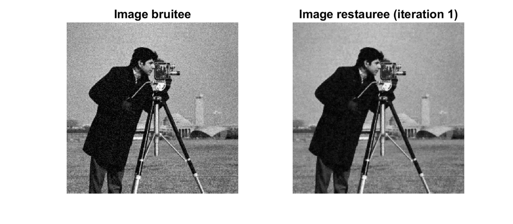
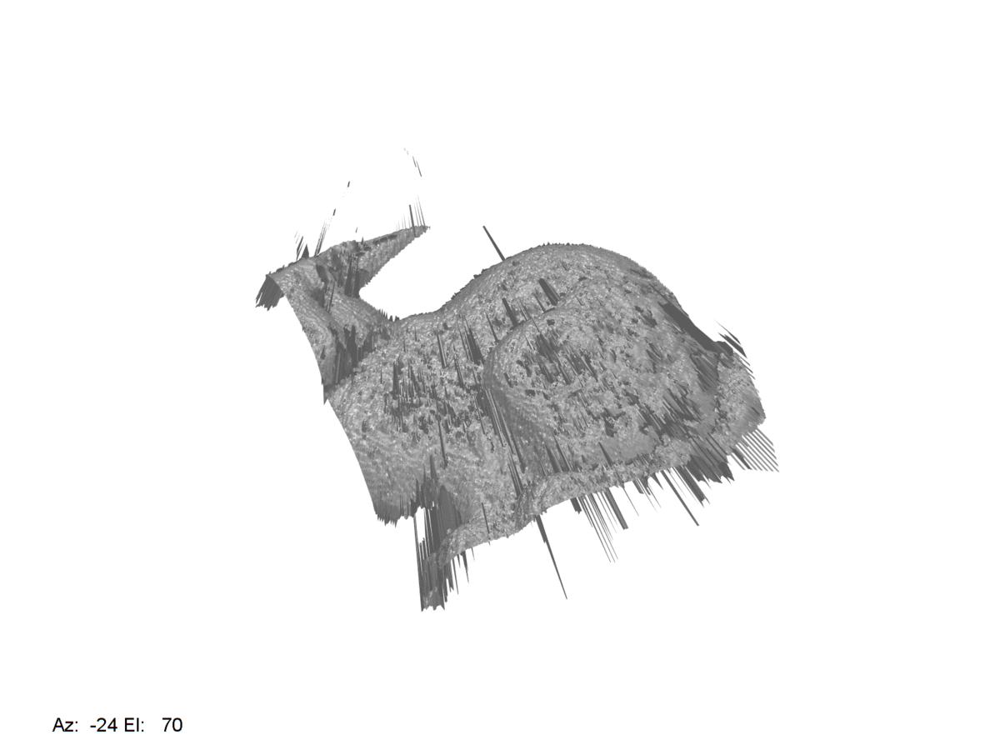
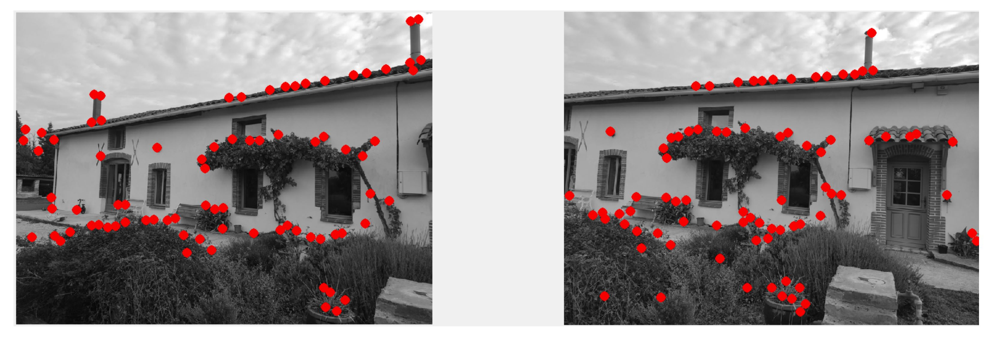

Projects
- Robust Hypersphere Fitting from Noisy Data Using Gibbs Sampling
- Image classification using semi supervised learning : Implementation of FixMatch here
- Implementation of Progressive Compression for Lossless Transmission of Triangle Meshes here
- Reflectance estimation with RTI here
- Web page using Deep neural networks
- Other Projects and Results :

Expectation Maximization on a Gaussian mixture model

Metropolis-Hastings Algorithm

Segmentation with classification

Compression of 3D object

restoration with variational methods

3D reconstruction by RTI

point of interest with the Harris detector